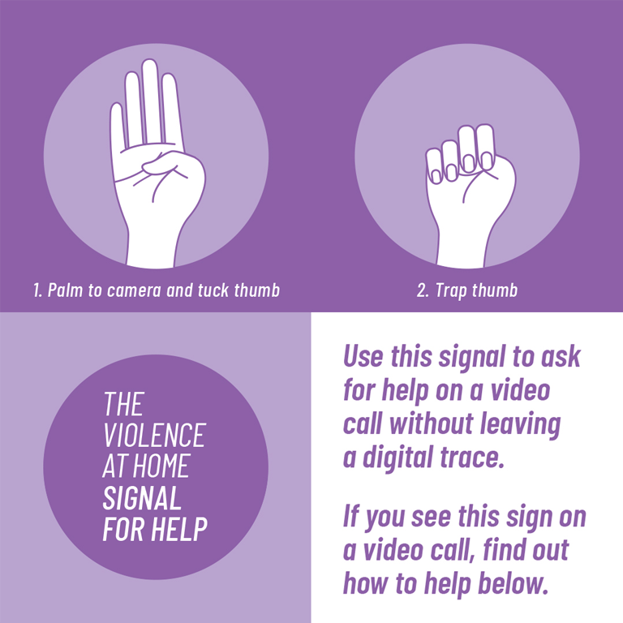

Latest Articles
Read educational content and personal stories related to domestic violence.
Understanding Domestic Violence: The Signs
Published on October 1, 2024
Domestic violence can manifest in various forms, including physical, emotional, and psychological abuse. Recognizing the signs is crucial for early intervention...
Read MoreHow to Support a Friend in an Abusive Relationship
Published on September 20, 2024
When a friend is in an abusive relationship, it's important to be supportive without judgment. Here are some steps you can take to help...
Read MoreCreating a Safety Plan: Tips and Resources
Published on September 15, 2024

Having a safety plan can make a significant difference for those in dangerous situations. Here are some essential tips to consider...
Read MoreFeatured Video
This video explains the impact of domestic violence on families and provides insights into support systems available.